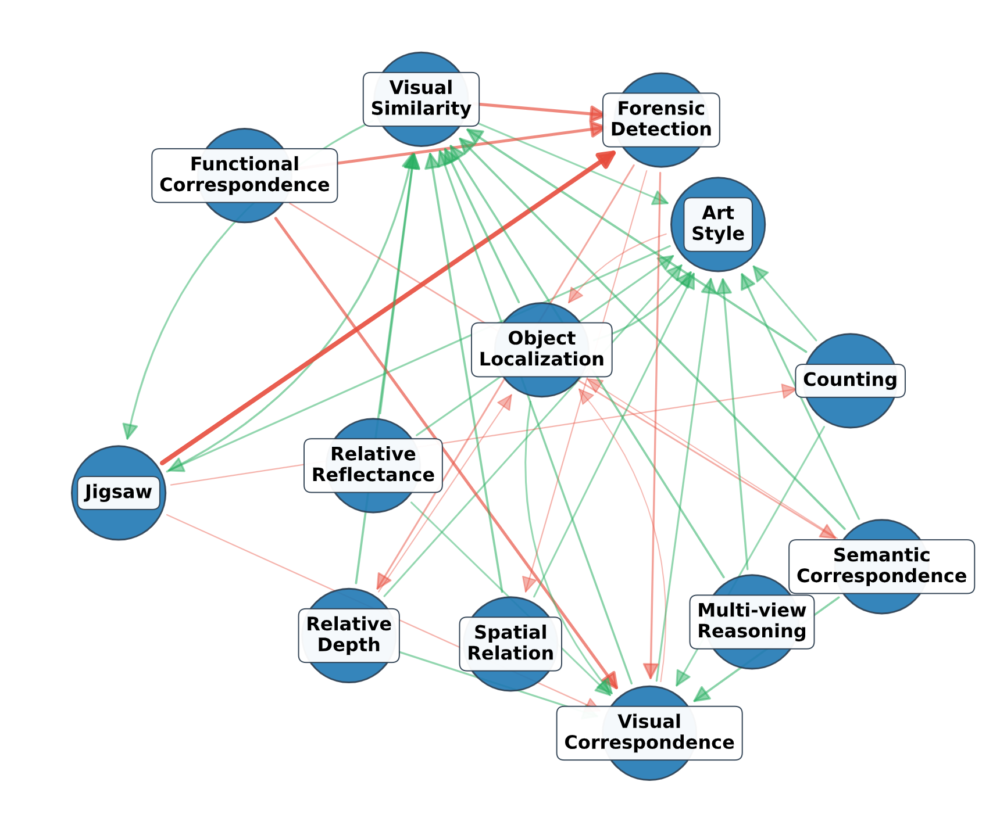
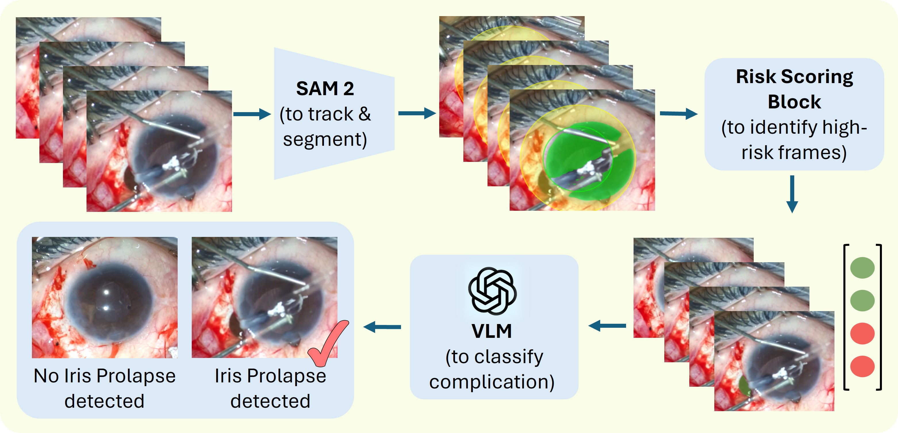
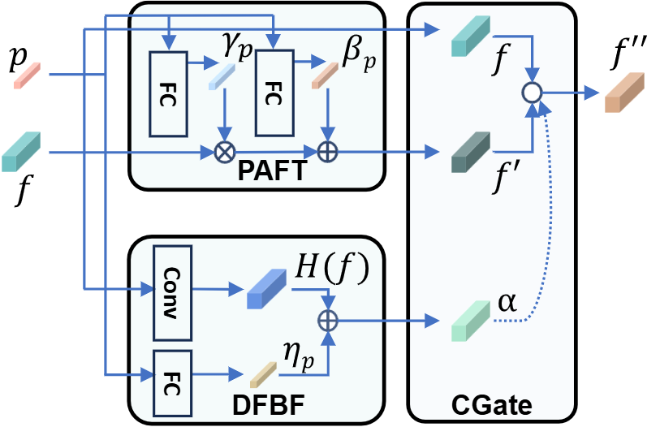
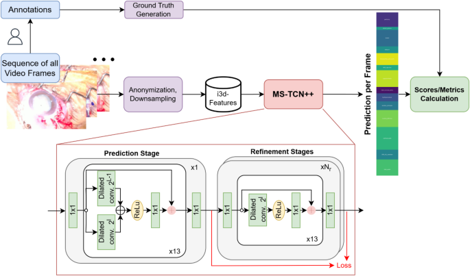
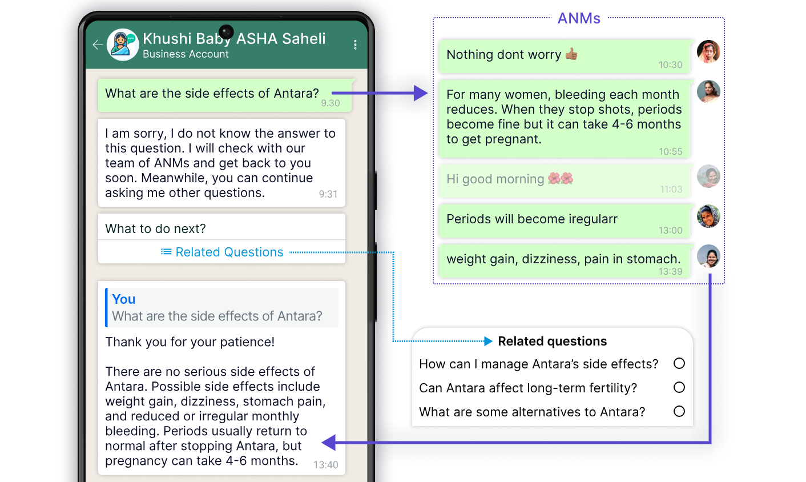

Publications

CVPR 2026
Understanding Task Transfer in Vision-Language Models
CVPR 2026 | Unireps Workshop @ NeurIPS 2025

Under Submission
CataractCompDetect: Intraoperative Complication Detection in Cataract Surgery
Under submission


UbiComp 2025
CataractBot: an LLM-powered expert-in-the-loop chatbot for cataract patients
ACM IMWUT / UbiComp 2025
EJO 2025
Learnings from a Large-Scale Deployment of an LLM-Powered Expert-in-the-Loop Healthcare Chatbot
European Journal of Ophthalmology 2025

Sci. Reports 2025
Phase recognition in manual Small-Incision cataract surgery with MS-TCN++ on the novel SICS-105 dataset
Nature Scientific Reports 2025
